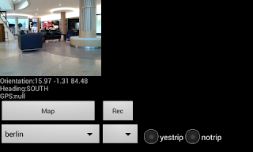

Algılayıcı Ölçümleri, Video, Android, GPS, Haritalama
İki uygulama: Birincisi cep telefonunda nerede olduğumuzu harita üzerinde bulmak, algılayıcı, GPS değerlerini kaydetmek için. Diğeri hızlı frekansta ivmeölçer (acceloremeter), GPS kaydeder.
https://github.com/burakbayramli/classnotes/tree/master/sk/2017/02/sensorcam
1) uygulama kamera görüntüleri, yön algılayıcısı, GPS verilerini kaydetme özelliği var. Uygulama başka bir proje için veri kaydı, test etme ve sonradan analiz amaçlı yazildi, başlangıç noktası olarak faydalı olabilir. Harita gösteren kodun zoom özelliği var, sağa, sola, yukarı, aşağı kaydırma hareketi ile doğu, batı, vs. yönündeki diğer haritaları da görmek mümkün.
https://github.com/burakbayramli/kod/tree/master/sensorcam/cam
Uygulama tüm bir şehrin haritasını tek bir zip dosyasında tutar, başka hiçbir veriye, ya da Google Maps bağlantısına ihtiyaç yok. Haritalama uygulaması böyle çalışmalı; Internet bağlantısı olmayınca harita çalışmazsa bu iyi olmaz, turist, gezgin yolda kalır. "Merkezle" fazla bağlantı iyi bir şey değil, sağlam bilgi işlem sistemleri de bu mantıkla kurulur.
Derlemek için ant yeterli, ant debug, ant installd, ya da ant release ile apk yaratılır.
Robotik hedefleri (dış dünyada bağımsız gezinebilen yapay zeka uygulamaları) için ölçüm toplama bağlamında faydalı olabilir.
Kamera resimleri, yön algılayıcısı (orientation sensor), GPS değerleri, ivme algılayıcı (accelerometer) belli aralıklarla biriktirir, ve istendiği anda (Rec düğmesine basılınca) sonuçları telefon dizinine kaydeder. Dosya SDCARD/Bass altında bir numaralı dizindir, her Rec sonrası yeni bir dizin yaratılır. Böylece birkaç ölçümü arka arkaya kaydetmek mümkün olur.
Her ölçüm ayrı bir txt dosyasında, analiz amacıyla bu dosyaları USB ile dizüstüne aktarilabilir. Her veri dosyasındaki satır sayısı ve kameranın kaydettiği tek resim (frame) sayısı birbiriyle aynı, yani eğer ivme algılayıcından 20 satır kaydedildiyse, yön algılayıcısından da 20 satır kaydedilmiş demektir, ve her satırın zaman indisi birbiriyle eşittir. Yani herhangi bir zaman anında tüm algılayıcılardan alınan veri aynı anda bellege alınır. Böylece sonradan analiz sırasında odaklanan zaman diliminde tüm ölçümlerin hangi seviyede olduğu bilinebilir.
Uygulama içinde ve eğer GPS bağlantısı kurulduysa Map düğmesine basılarak o anda olunan yerin haritası alınabilir. Haritalar bir zip dosyası içinde.
Kamera kalibrasyonu hakkındaki bir yazı aynı bağlantıdan erisilebilir.
Steps adlı 2. uygulama adım sayısı ölçme, yürüyüş yönü saptaması için gereken ölçümleri çok daha hızlı frekansta kaydeder.
https://github.com/burakbayramli/kod/tree/master/sensorcam/steps
Sigma Bazlı Kalman Filtreleri (Unscented Kalman Filter) Java kodları
https://github.com/burakbayramli/kod/tree/master/sensorcam/ukf
